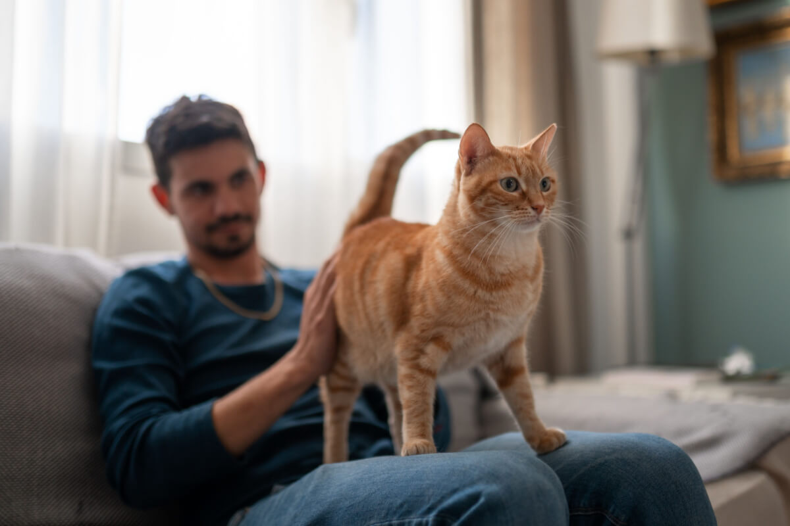
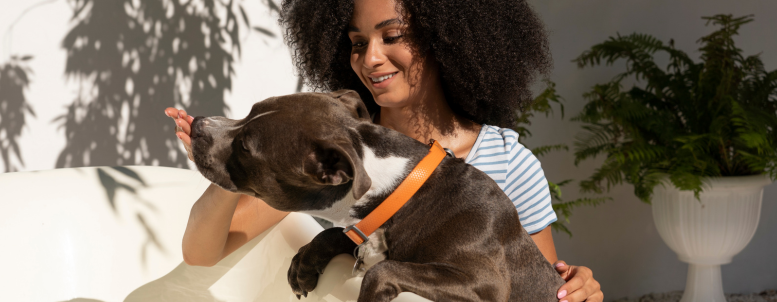
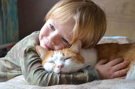

"Ver o Gergelim sem conseguir andar foi de partir o coração. Achei que ele não voltaria a ser o gatinho ativo de antes, mas o tratamento ortopédico na Nossa Clínica fez milagre! Hoje ele está aqui, firme e forte, subindo em tudo de novo. Gratidão eterna por devolverem a saúde do meu laranjinha!"
- Mateus Rodrigues & Gergelim🐾

"Confio o Jojo de olhos fechados à equipe. Desde o primeiro atendimento, percebi que aqui eles amam o que fazem. O cuidado técnico é impecável, mas o acolhimento humano (e canino!) é o que realmente faz a diferença. Agradecemos e recomendamos. 🙂"
- Maria dos Santos & Jojo🐾

"O Minato é o meu melhor amigo de todo o mundo! Eu fico muito feliz quando ele está bem para brincar comigo de ninja. O pessoal da clínica cuida muito bem dele e ele nem chora quando vai lá. Nota mil!!! 😁😹"
- Thiago Gabriel & Minato🐾